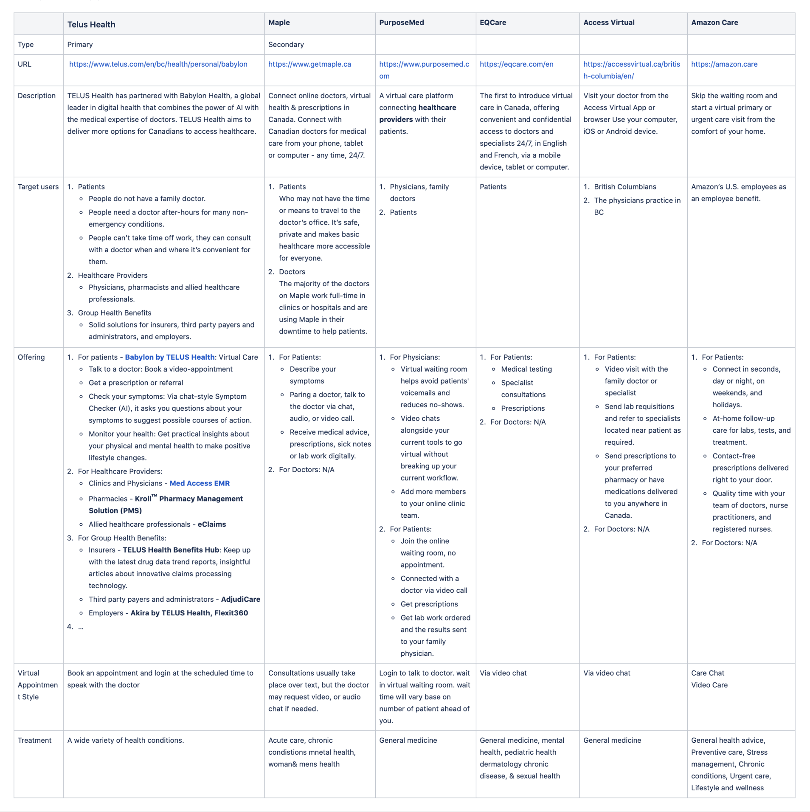
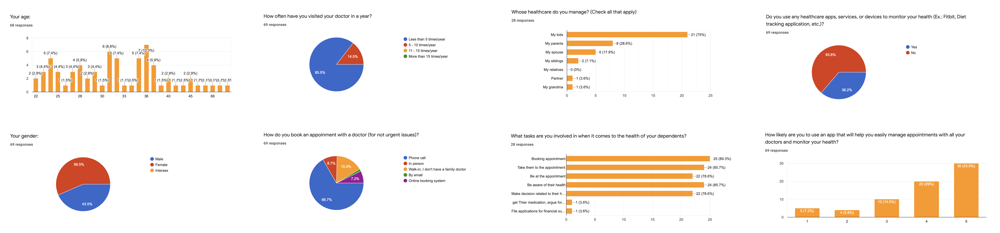
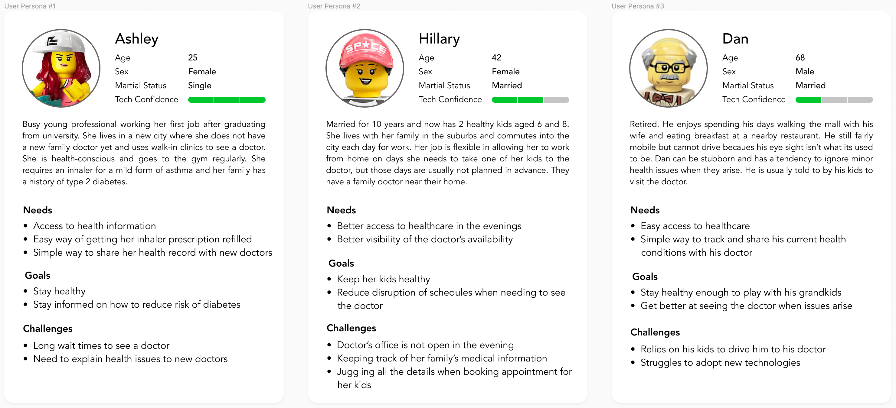
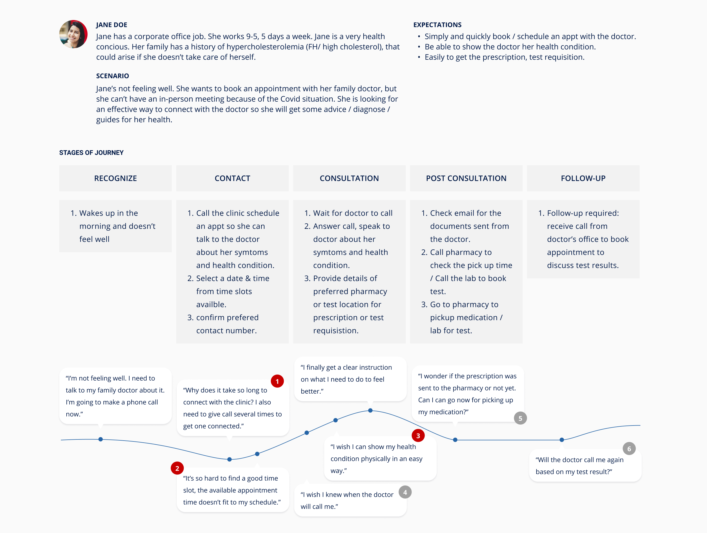

CarePlus
Web Application
Role
UX Design
Responsibilities
Product design
Visual design
CarePlus is a consumer-centric digital healthcare application that allows people to access quality proactive healthcare services when and where they need it. This application offers a range of benefits for both patients and healthcare providers, especially in telehealthcare, using virtual consultation.
Background information
The Client approached us about a healthcare project they needed building a solution for. They wanted to create an ecosystem of primary care clinics and leverage technology to improve patients’ experience when managing their healthcare or visiting their doctors. They started planning their project in 2019. We started working with them at the end of 2019 beginning of 2020. The Covid-19 pandemic started during the early phase of our design process. As existing clinics and healthcare adapted to the new situation. This helped us validate the concept and made it easier to gather information around remote healthcare.
In this case study, I will focus on the Patient's scope - what their frustrations and motivations are, then the process that we approached to give the solutions for their problems.
Problem
The current healthcare system is an outdated process with many inefficiencies.
- Care providers rely on old EMR systems that force them to use manual processes to manage and transfer patient information.
- Patients endure longer wait times for care and test results.
- Patients lack ease of access to their health records.
Goal
- To digital transform the current healthcare system to become the new standard of healthcare.
- To build a platform that patients and care providers can simply connect.
- To build a platform that is simple enough to be used by everyone.
...
Research Goals & Methodologies
Market
The client decided to build and release this product in North America, mainly focus on The US and Canada users. At the end of the day, the number of people who care much about the health of themselves and their family members keeps on rising. Though each person has a different situation, the issue they face is alike which is booking and getting into the appointment with the care providers.
Research goals
- To get the users' age range and who cares about the virtual healthcare service.
- To understand the pain points of the current healthcare system.
- To understand how current people book an appointment with their doctors.
- To understand how and if people track their health.
Competitive analysis
To collect data about products in the marketplace, we started creating a competitive analysis to highlight the strengths and weaknesses of products as well as identify possible user types.
User survey
We deployed a user survey that consists of 15 questions and uploaded it to some groups on Facebook & LinkedIn.
Some research questions asked to users:
- How do you book an appointment with your doctor?
- Do you face any challenges when booking an appointment with your doctor or when visit your doctor?
- What tasks are you involved in when it comes to the healthcare of your dependents?
- Based on your experience with the current healthcare system and your doctor/clinic, what do you think could be improved?
70 people had joined and completed the survey that gently provided us the quantitative data needed.
Key metrics
- People who join the survey in the age range of 22 to 72, both male and female. Most of them have a family doctor.
- 41% of people have been concerned about their health issues.
- 82% of people have visited doctors less than 5 times per year.
- 100% of people book an appointment with their doctors by phone call. Nearly 50% of them are frustrated about the waiting time during the booking process or visiting the doctors on the appointment date.
- 52% of people manage their dependents' health. Most of them are parents in their '30s and need to manage the health of their kids. Some people need to take care of the health of their parents, spouse, and siblings. The number of tasks they usually involve in is booking appointments, taking their dependents to the appointment, being aware of their dependents' health, and making the decision if needed.
Scope
Target users: People aging 22 - 40 years old are tech-savvy and numerous elderly persons, 50 - 70 years old, want to simply connect to doctors via virtual call.
User personas
Potential users interview
We have selected some people who have a similar background with the user personas to conduct the interview then to understand their pain points as well as their motivations related to the health tracking.
Some interview questions asked to users:
- In the last 2 years, have you had a remote consultation with your doctor? How did you book this appointment? On the day of the appointment, how did the doctor contact you? Do you feel the experience is the same as when you would go in to see your doctor in person?
- When you feel unwell or become aware of an issue related to your health, what is your first course of action?
- Do you keep copies of your and/or your family's medical records? How do you store them?
Key insights:
- Doctors will primarily contact their patients by phone for a remote appointment. Possible reasons are the cost of virtual solutions and issues around adopting a new system.
- Most people felt that the convenience of a virtual appointment may remove frustrations associated with visiting a doctor but also created new challenges such as difficulty explaining their concerns to the doctor.
- Most people will seek out advice before booking an appointment with a doctor. Family members are consulted and trusted more than google searches.
- Most people don't want to keep copies of their medical records in the paper but want to keep them online.
Define problems
- People don't know the doctor's schedule so they can't check the doctor's availabilities when they need to book an appointment that fits the patient's schedule.
- People spent a lot of time in the whole process of visiting their doctor in person.
- People want to keep track of their health records, but most don't because it's not easy.
- People managing their family members' healthcare face similar problems as 1,2,3 above.
Design solutions
- Provide an easy way to view the doctor's schedule/availability.
- Give patient options for different appointment types - virtual, phone, in-person - that suit their need.
- Give the patient ability to easily view and manage their medical health records.
- Give the patient ability to easily manage the healthcare of dependents as well.
Ideation & Validation
Affinity map
To organize and analyze research findings collected from the user survey and user interviews in the previous steps, we chose affinity mapping. By using FigJam - a new feature of Figma - we quickly organized the notes to get the ideas about product' categories as well as be able to determine the key features for the product.

Findings
After card sorting, we concluded there are several features we need to include: Booking Appointment, Managing Documents, Healthcare Resources, and Health Passport.
- There are numerous challenges for patients when it comes to schedule an appointment or visit a doctor in person. To solve this we created a simple online appointment booking system that displaying doctor's availability, and provides 3 different appointment types that allow the care providers to offer the length of appointments.
- Based on patients' concerns about the test results & medical records, we provide them the ability to access the documents so they can simply view their health information.
- Based on the feedback about symptoms resources and healthcare tracking that provides us the opportunity to include healthcare resources as a nice-to-have feature for the app.
- Lastly, based on the patients' needs about the convenience to access the healthcare system, we created the Health Passport feature to securely store and allow patients to easily access all their health information when they need it.
Customer journey map
Next, we used the Customer Journey Map to visualize the booking appointment process of the patient, also identify the opportunities to improve their experience on this flow.
The journey map above points out several clear points where Jane's expectations weren't met, and from that, we were able to give out the opportunities to solve those problems.
- #1, 2 - Get rid of waiting time during the booking appointment and provide users an easier way to select available dates & times by giving them the ability to check the doctor's availability according to appointment types (Audio/Video/In-person).
- #3 - Allow the users to send the support images, photos of their health conditions to the doctor.
- #4, 5, 6 - Send a notification to inform users when it comes to any feedback from the doctor or the labs.